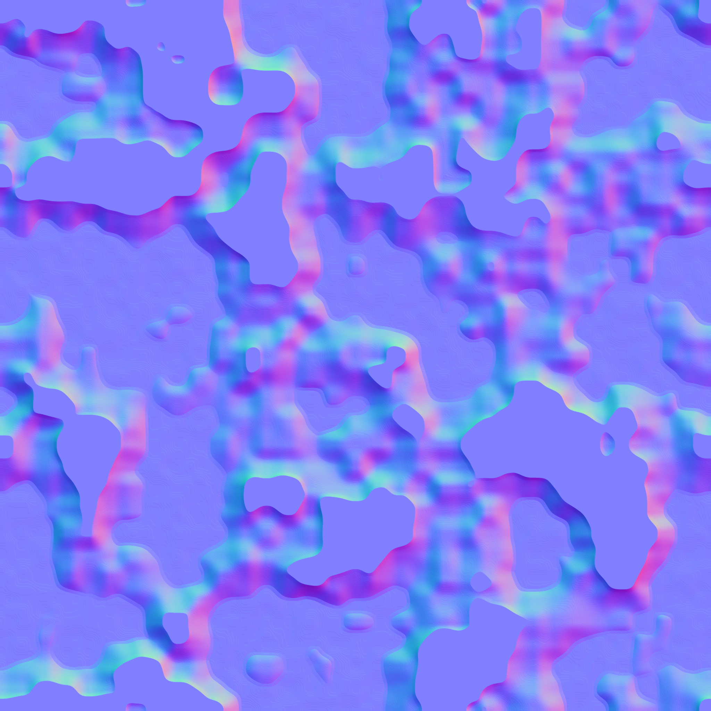

Same frozen painted-metal request. Native normal before and after; difference display amplified ×8. Quantitative values are in review-metrics.json. This is numerical review, not MAT-02 aesthetic acceptance.
98 changed pixels; max 4/255 (build-to-build).
358 changed pixels; max 8/255 (build-to-build).
